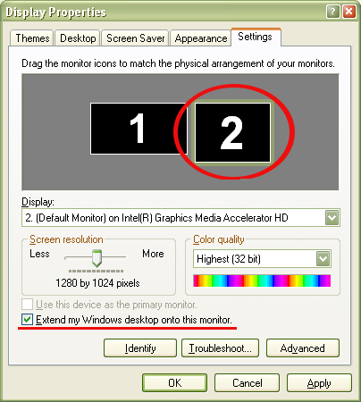
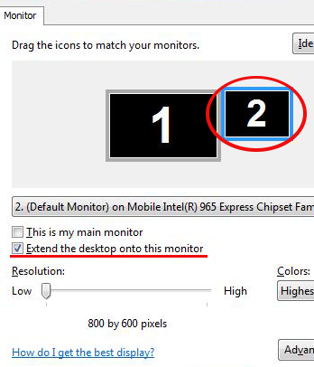
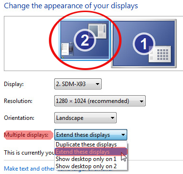

5.4 Dual Screen Settings
SoftProjector will require a secondary screen/monitor to be set up on your computer to show words on the screen correctly. SoftProjector will display words on monitor 2. If monitor 1 is secondary and monitor 2 is primary, then a special program is required.
Windows XP
Windows Vista
Windows 7
Other operating systems
Windows XP:
1. From you desktop, right-click and select "Properties"
2. Select "Settings" tab
3. You should be able to have 2 monitor shown. If only one is shown, then
either your computer does not support secondary monitor, or drivers are not
installed properly.
4. Select monitor 2
5. Set applicable screen resolution
6. Make sure that "Extend my Windows desktop onto this monitor" is checked.
This will allow to have separate screens, on for your monitor and other for
your projector.

Windows Vista:
1. From you desktop, right-click and select "Personalize"
2. Select "Display Settings"
3. You should be able to have 2 monitor shown. If only one is shown, then
either your computer does not support secondary monitor, or drivers are not
installed properly.
4. Select monitor 2
5. Set applicable screen resolution
6. Make sure that "Extend the desktop onto this monitor" is checked.
This will allow to have separate screens, on for your monitor and other for
your projector.

Windows 7:
1. From you desktop, right-click and select "Screen Resolution"
2. You should be able to have 2 monitor shown. If only one is shown, then
either your computer does not support secondary monitor, or drivers are not
installed properly.
3. Select monitor 2
4. Set applicable screen resolution
5. From "Multiple displays:" select "Extend these displays"

Other Operating Systems:
SoftProjector has been successfully tested on Linux and Mac. Because of
great variety of operating system, please refer to that systems manual
on how to set up secondary monitor